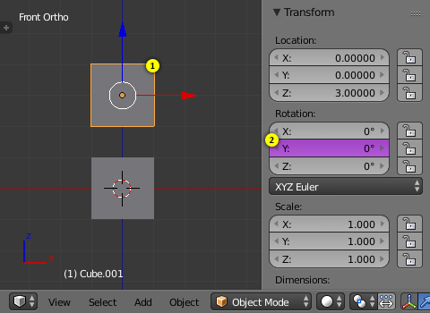
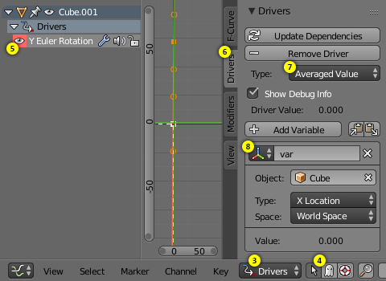
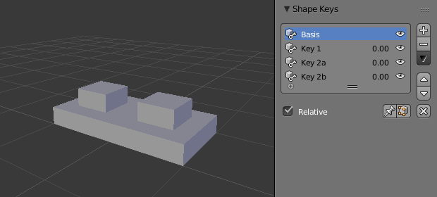
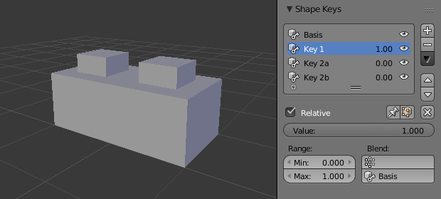
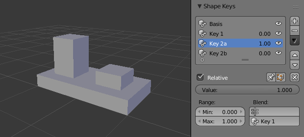
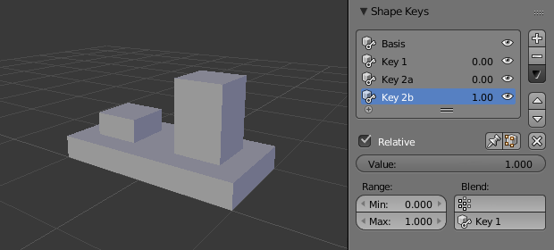
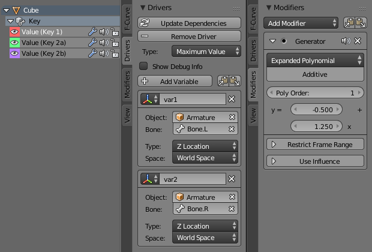
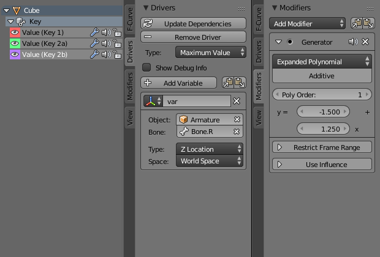
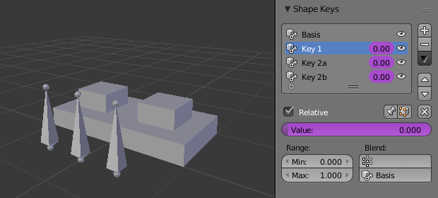
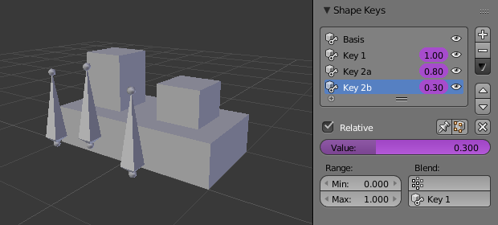

Робхід та Приклади¶
Ось деякі приклади використання драйверів і ходу роботи з ними.
Хід роботи¶
Драйвер Трансформацій¶
Цей приклад показує, як установити драйвер для керування трансформаційною властивістю. Спершу, переконайтеся, що ви перемкнулися на ортографічний огляд спереду Спереду Орто -- Front Ortho. Numpad5, Numpad1.
- У режимі «Об'єкт» Object Mode виділимо, а потім здублюємо стандартний Куб. Shift-D. Перемістимо "Cube.001" у певну нову локацію.
- При виділеному "Cube.001" додамо одиничний драйвер для властивості обертання по осі Y Rotation Y.
- Відкриємо Редактор Графів Graph Editor та перемкнемось у ньому у режим «Драйвери» Drivers.
- Вимкнемо опцію «Показати Лише Виділене» Show Only Selected (обведена нижче на ілюстрації зеленим), бо це корисно для роботи з драйверами.
- У регіоні каналів зліва виділимо властивість Y Euler Rotation.
- Натиснемо клавішу N для відкриття правої боковини, регіону «Властивості» -- Properties та розгорнемо панель «Драйвери» -- Drivers.
- Змінимо на цій панелі тип драйвера Type на значення «Усереднене Значення» -- Averaged Value, це повертатиме усереднене значення змінних драйвера.
- Модифікуємо устави змінної драйвера:
- «Тип -- Канал Трансформацій» Type -- Transform Channel
- «Об/Кістка -- Куб» Ob/Bone -- Cube
- «Тип Трансформацій -- Х Локація» Transform Type -- X Location
- «Простір Трансформацій -- Простір Світу» Transform Space -- World Space

|

|
Після завершення цих модифікацій куб-дублікат "Cube.001" повинен автоматично обертатися навколо осі Y, коли куб-оригінал "Cube" буде переміщуватися зліва направо.
Приклади¶
Вираз Драйвера¶
Ось кілька прикладів, що використовують скриптований вираз Expr для задання Значення Драйвера Driver Value.
Приклад обертання об'єкта.
Обертання по орбіті навколо певної Точки¶
Тут до властивостей локації куба X Location та Y Location було додано два драйвери.
Для задання локації об'єкта було використано такі наступні скриптовані вирази.
- X Location Expr
0 + (sin(frame / 8) * 4)(frame/8): номер поточного кадру анімації, поділений на 8 для уповільнення оберту вниз.(sin( )*4): Це повертає значення синуса для (frame/8), яке потім множить на 4 для збільшення кола обертання.0 +: використовується для керування зсувом значення X Location по орбіті.
- Y Location Expr
0 + (cos(frame / 8) * 4)(frame/8): номер поточного кадру анімації, поділений на 8 для уповільнення оберту вниз.(cos( ) * 4): Це повертає значення косинуса для (frame/8), яке потім множить на 4 для збільшення кола обертання.0 +: використовується для керування зсувом значення Y Location по орбіті.
frame -- це те ж саме, що й bpy.context.scene.frame_current.
Простір імен Драйвера¶
Існує список вбудованих функцій та властивостей драйвера. Вони можуть бути показані через консоль Python:
>>> bpy.app.driver_namespace['
__builtins__']
__doc__']
__loader__']
__name__']
__package__']
acos']
acosh']
asin']
asinh']
atan']
atan2']
atanh']
bpy']
ceil']
copysign']
cos']
cosh']
..
Нижченаведений скрипт додає функцію у простір імен драйвера, яка потім може бути використана у виразі driver_func(frame)
import bpy
def driver_func(val):
return val * val # return val squared
# add function to driver_namespace
bpy.app.driver_namespace['driver_func'] = driver_func
Драйвер для Ключа Форми¶
Це приклад драйвера для ключа форми. Цей драйвер було додано до устави ключа форми «Значення» -- Value.
{kind=link}
Драйвер для ключа форми.
У цьому прикладі використовується обертання Z Rotation Арматурної Кістки "b" для керування зміною значень параметра Value для Ключа Форми. Режим обертання цієї кістки установлено як XYZ Euler.
Ф-Крива цього Драйвера розкладена так:
- Bone Z Rotation 0.0 (0.0): Shape Key value 0.0
- Bone Z Rotation -2.09 (-120.0): Shape Key value 1.0
Цей тип драйвера може також установлюватися з таким типом змінної Variable Type як «Різниця Обертань» -- Rotational Difference.
Дивіться детальніше про Ключі Форм -- Shape Keys.
Драйвери та Одночасно кілька Відносних Ключів Форм¶
Екранознімки нижче ілюструють комбінування ключів форм, кісток та драйверів для зроблення причеплення кількох відносних ключів форм до одного кореня. Хоча йому і не вистачає зручності спільної устави, параметра «Оцінка Часу» -- Evaluation Time, яка доступна для абсолютних ключів форм, однак він дозволяє отримувати більш складні відношення між вашими ключами форм.

Ключ форми Basis. |

Ключ форми Key1. |

Ключ форми Key2A. |

Ключ форми Key2B. |
{kind=link}
{kind=link}
{kind=link}
{kind=link}
Ключ форми Basis має стоси повністю відтягнені. Key1 має базу повністю розширену. Key2A має лівий стос повністю розширений. Key2B має правий стос повністю розширений. Key2A і Key2B є обидва відносними до Key1 (як ви можете побачити у полі внизу справа панелі Shape Keys.

Key1 повинен обробляти конфліктні значення з двох кісток. |

Key2B аналог Key2A, але скеровується, ведеться другою кісткою. |
{kind=link}
{kind=link}
{kind=link}
Значення Key1 прив'язане до позиції кісток драйвером за допомогою двох змінних. Кожна змінна використовує координату по осі Z (Z Location) у просторі світу World Space для кості та використовує максимальне значення (Maximum Value) для визначення, наскільки база повинна розширюватися. Генератор полінома (Generator: Expanded Polynomial) виставлено так, що верх домінантного стосу мав одну лінію з кісткою для цього стосу.
Значення ключа Key2A прив'язане до позиції кістки "Bone.L". Параметри його генератора виставлено так, що коли значення Key1 досягає «1», то значення Key2A починає зростання від нуля. Таким чином, верх лівого стосу буде рухатися кісткою bone.L (здебільшого).
Значення ключа Key2B прив'язане до позиції кістки "Bone.R". Параметри його генератора подібні до драйвера Key2A так, що верх правого стосу буде рухатися кісткою bone.R (здебільшого).

Коли обидві кістки переміщені вниз, то Key2B і Key2A дезактивуються, а на Key1 здійснюється низький вплив. |

Витягнено. |
{kind=link}
{kind=link}
Оскільки, зовсім легко для кісток bone.L і bone.R перебувати у позиціях, що вказують на конфліктні значення для Key1, то бувають випадки, коли ці кістки не стають на одну лінію з відповідними їм стосами. Якщо драйвер для Key1 використовував значення Average чи Minimum замість Maximum для визначення значення цього ключа форми, то «конфлікти» між bone.L і bone.R вирішувалися би по-різному. Конкретні варіанти ви будете вибирати вже відповідно до потреб вашої анімації.